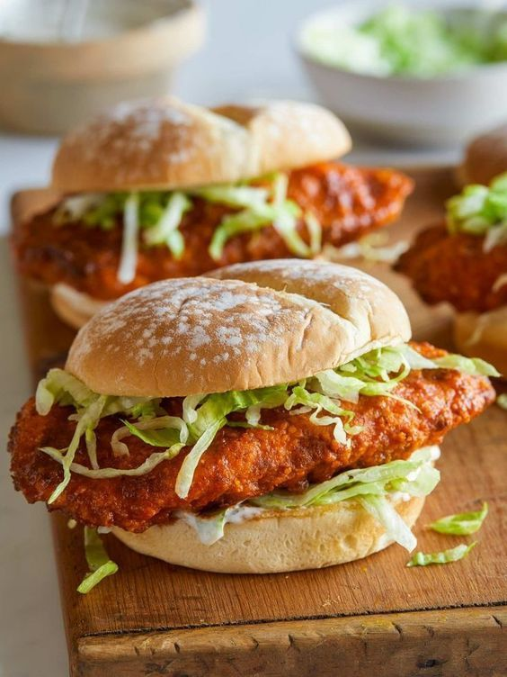

CHICKEN PASTA

Ingredients
- 2 (8 ounce) boneless, skinless chicken breasts, boneless skinless
- 1 tbsp Garlic powder
- 2 cups Iceberg lettuce
- 2 Eggs, large
- 1/4 cup Honey
- 3/4 cups All purpose flour
- 1/2 tsp Black pepper
- 1 tsp Cayenne pepper
- 4 tsp Paprika, smoked
- 1 1/4 tsp Salt
- 1 tsp Turmeric
- 4 Burger buns, lightly toasted
- 1 cup Panko breadcrumbs
- 1/2 cup Butter, unsalted
- 1/2 cup Buttermilk ranch
Instructions
- Pat each chicken breast dry with paper towels.
- Season both sides of each piece of chicken with salt and pepper
- In a shallow baking dish combine flour, 1/2 tablespoon garlic powder, 1/2 teaspoon turmeric, 1/2 teaspoon smoked paprika, 1/2 teaspoon salt, and 1/4 teaspoon pepper. Whisk together
- In another shallow bowl whisk together eggs.
- In a third shallow dish combine panko and remaining spices. Whisk together.
- Dredge each chicken breast into the flour mixture, shaking off any excess.
- Dredge each chicken breast in beaten eggs until fully coated
- Last, dredge each chicken breast in the panko mixture, pressing the crumb coating firmly onto each piece of chicken
- Preheat oven to 400˚F. Remove chicken breasts from refrigerator and spray each coated chicken breast with cooking spray on each side and bake for 15 to 20 minutes or until coating has lightly browned and the chicken has cooked through
- While chicken is baking, combine melted butter, honey, smoked paprika, cayenne pepper, and salt in a small mixing bowl and whisk together.
- Once chicken is done baking, remove from oven and carefully brush spicy-honey butter all over each piece until fully and evenly coated
- To assemble: Spread ranch over the bottoms and tops of each bun
- Top chicken with a handful of shredded lettuce.
- Place top buns over each sandwich and serve.